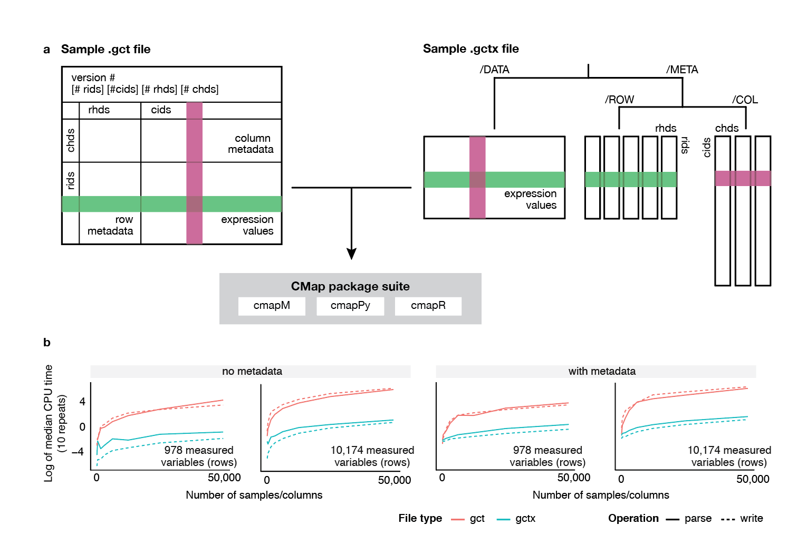

pandasGEXpress¶
pandasGEXpress package (integrated with Python’s pandas package) allowing users to easily read, modify, and write .gct and .gctx files. Note that .gctx files are more performant than .gct, and we recommend their use.
GCToo Class¶
-
class
cmapPy.pandasGEXpress.GCToo.GCToo(data_df, row_metadata_df, col_metadata_df, src=None, version=None, make_multiindex=False, logger_name='cmap_logger')[source]¶ Class representing parsed gct(x) objects as pandas dataframes. Contains 3 component dataframes (row_metadata_df, column_metadata_df, and data_df) as well as an assembly of these 3 into a multi index df that provides an alternate way of selecting data.
Parsing¶
-
cmapPy.pandasGEXpress.parse.parse(file_path, convert_neg_666=True, rid=None, cid=None, ridx=None, cidx=None, meta_only=False, make_multiindex=False)[source]¶ Identifies whether file_path corresponds to a .gct or .gctx file and calls the correct corresponding parse method.
- Input:
Mandatory: - gct(x)_file_path (str): full path to gct(x) file you want to parse.
Optional: - convert_neg_666 (bool): whether to convert -666 values to numpy.nan or not
(see Note below for more details on this). Default = False.- rid (list of strings): list of row ids to specifically keep from gctx. Default=None.
- cid (list of strings): list of col ids to specifically keep from gctx. Default=None.
- make_multiindex (bool): whether to create a multi-index df combining
the 3 component dfs
- Output:
- myGCToo (GCToo)
- Note: why does convert_neg_666 exist?
- In CMap–for somewhat obscure historical reasons–we use “-666” as our null value
for metadata. However (so that users can take full advantage of pandas’ methods, including those for filtering nan’s etc) we provide the option of converting these into numpy.NaN values, the pandas default.
Writing¶
-
cmapPy.pandasGEXpress.write_gctx.write(gctoo_object, out_file_name, convert_back_to_neg_666=True)[source]¶ Writes a GCToo instance to specified file.
- Input:
- gctoo_object (GCToo): A GCToo instance.
- out_file_name (str): file name to write gctoo_object to.
-
cmapPy.pandasGEXpress.write_gct.write(gctoo, out_fname, data_null='NaN', metadata_null='-666', filler_null='-666', data_float_format=':.4f')[source]¶ Write a gctoo object to a gct file.
- Args:
gctoo (gctoo object) out_fname (string): filename for output gct file data_null (string): how to represent missing values in the data (default = “NaN”) metadata_null (string): how to represent missing values in the metadata (default = “-666”) filler_null (string): what value to fill the top-left filler block with (default = “-666”) data_float_format (string): how many decimal points to keep in representing data
(default = 4 digits; None will keep all digits)- Returns:
- None
Concatenating¶
concat_gctoo.py
This function is for concatenating gct(x) files together. You can tell it to find files using the file_wildcard argument, or you can tell it exactly which files you want to concatenate using the input_filepaths argument. The meat of this function are the hstack (i.e. horizontal concatenation of GCToo objects) and vstack (i.e. vertical concatenation).
Terminology: ‘Common’ metadata refers to the metadata that is shared between the loaded GCToo’s. For example, if horizontally concatenating, the ‘common’ metadata is the row metadata. ‘Concatenated’ metadata is the other one; it’s the metadata for the entries being concatenated together. For example, if horizontally concatenating, the ‘concatenated’ metadata is the column metadata because columns are being concatenated together.
There are 2 arguments that allow you to work around certain obstacles of concatenation.
1) If the ‘common’ metadata contains fields that are not the same in all files, then you will need to remove these fields using the fields_to_remove argument.
2) If the ‘concatenated’ metadata ids are not unique between different files, and you try to concatenate the files, an invalid GCToo would be formed (duplicate ids). To overcome this, use the reset_sample_ids argument. This will move the ‘new’ metadata ids to a new metadata field and replace the original ids with unique integers.
N.B. This script sorts everything!
-
cmapPy.pandasGEXpress.concat_gctoo.assemble_common_meta(common_meta_dfs, fields_to_remove)[source]¶ Assemble the common metadata dfs together. Both indices are sorted.
- Args:
common_meta_dfs (list of pandas dfs) fields_to_remove (list of strings): fields to be removed from the
common metadata because they don’t agree across files- Returns:
- all_meta_df_sorted (pandas df)
-
cmapPy.pandasGEXpress.concat_gctoo.assemble_concatenated_meta(concated_meta_dfs)[source]¶ Assemble the concatenated metadata dfs together. For example, if horizontally concatenating, the concatenated metadata dfs are the column metadata dfs. Both indices are sorted.
- Args:
- concated_meta_dfs (list of pandas dfs)
- Returns:
- all_concated_meta_df_sorted (pandas df)
-
cmapPy.pandasGEXpress.concat_gctoo.assemble_data(data_dfs, concat_direction)[source]¶ Assemble the data dfs together. Both indices are sorted.
- Args:
- data_dfs (list of pandas dfs) concat_direction (string): ‘horiz’ or ‘vert’
- Returns:
- all_data_df_sorted (pandas df)
-
cmapPy.pandasGEXpress.concat_gctoo.do_reset_ids(concatenated_meta_df, data_df, concat_direction)[source]¶ Reset ids in concatenated metadata and data dfs to unique integers and save the old ids in a metadata column.
Note that the dataframes are modified in-place.
- Args:
- concatenated_meta_df (pandas df) data_df (pandas df) concat_direction (string): ‘horiz’ or ‘vert’
- Returns:
- None (dfs modified in-place)
-
cmapPy.pandasGEXpress.concat_gctoo.get_file_list(wildcard)[source]¶ Search for files to be concatenated. Currently very basic, but could expand to be more sophisticated.
- Args:
- wildcard (regular expression string)
- Returns:
- files (list of full file paths)
-
cmapPy.pandasGEXpress.concat_gctoo.hstack(gctoos, fields_to_remove=[], reset_ids=False)[source]¶ Horizontally concatenate gctoos.
- Args:
gctoos (list of gctoo objects) fields_to_remove (list of strings): fields to be removed from the
common metadata because they don’t agree across filesreset_ids (bool): set to True if sample ids are not unique
- Return:
- concated (gctoo object)
-
cmapPy.pandasGEXpress.concat_gctoo.reset_ids_in_meta_df(meta_df)[source]¶ Meta_df is modified inplace.
-
cmapPy.pandasGEXpress.concat_gctoo.vstack(gctoos, fields_to_remove=[], reset_ids=False)[source]¶ Vertically concatenate gctoos.
- Args:
gctoos (list of gctoo objects) fields_to_remove (list of strings): fields to be removed from the
common metadata because they don’t agree across filesreset_ids (bool): set to True if row ids are not unique
- Return:
- concated (gctoo object)
Converting .gct <-> .gctx¶
Command-line script to convert a .gct file to .gctx.
- Main method takes in a .gct file path (and, optionally, an
- out path and/or name to which to save the equivalent .gctx) and saves the enclosed content to a .gctx file.
Note: Only supports v1.3 .gct files.
Command-line script to convert a .gctx file to .gct.
- Main method takes in a .gctx file path (and, optionally, an
- out path and/or name to which to save the equivalent .gctx) and saves the enclosed content to a .gct file.
Note: Only supports v1.0 .gctx files.
Extracting from .grp files¶
module with class definition and methods for reading and writing .grp files Created on Jun 20, 2012 @author: David Wadden
Slicing¶
Slices a random subset of a GCToo instance of a user-specified size.
-
cmapPy.pandasGEXpress.random_slice.make_specified_size_gctoo(og_gctoo, num_entries, dim)[source]¶ Subsets a GCToo instance along either rows or columns to obtain a specified size.
- Input:
- og_gctoo (GCToo): a GCToo instance
- num_entries (int): the number of entries to keep
- dim (str): the dimension along which to subset. Must be “row” or “col”
- Output:
- new_gctoo (GCToo): the GCToo instance subsetted as specified.
slice_gct.py
Extract a subset of data from a gct file. If called from the command line, ids can be provided as a list or as a path to a grp file. If using the slice method in Python, ids or boolean arrays can be used.
-
cmapPy.pandasGEXpress.slice_gct.slice_gctoo(gctoo, row_bool=None, col_bool=None, rid=None, cid=None, exclude_rid=None, exclude_cid=None)[source]¶ Extract a subset of data from a GCToo object in a variety of ways.
- Args:
- gctoo (GCToo object) row_bool (list of bools): length must equal gctoo.data_df.shape[0] col_bool (list of bools): length must equal gctoo.data_df.shape[1] rid (list of strings): length must equal gctoo.data_df.shape[0] cid (list of strings): length must equal gctoo.data_df.shape[0] exclude_rid (bool): if true, select row ids EXCLUDING ‘rid’ (default: False) exclude_cid (bool): if true, select col ids EXCLUDING ‘cid’ (default: False)
- Returns:
- out_gctoo (GCToo object): gctoo after slicing